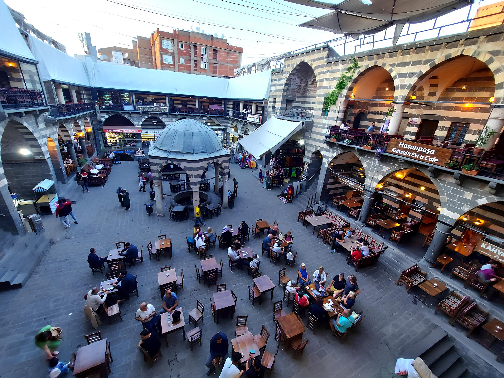

SUR
Diyarbakır’ın simgesi haline gelmiş ve bulunduğu ilçeye adını vermiş olan Diyarbakır
Surları, toplam 5 kilometre uzunluğa sahiptir. uzunluk açısından dünyada Çin Seddi ve İstanbul
Surlarından sonra gelir

Hasanpaşa Hanı
Diyarbakır’a gelen turistlerin en yoğun ziyaret ettiği mekânlardan olan Hasan Paşa Hanı,
1573 senesinde Osmanlı’da valilik görevinde bulunan Vezirzade Hasan Paşa tarafından yaptırılmıştır.
On Gözlü Köprü
On açıklığa sahip olduğu için yerel halkça On Gözlü Köprü olarak bilinirken eski Silvan
yolu güzergâhında bulunduğundan bazı kaynaklarda ise Silvan Köprüsü olarak da geçer.
.jpg)
Hz. Süleyman Cami
Hazreti Süleyman Camii, Minaresindeki kitabelerden anlaşıldığı üzere Nisanoğlu Ebul
Kasım tarafından 1155-1160 yılları arasında yaptırılmıştır.Diyarbakır’ın İslam orduları tarafından
alınışı sırasında şehit düşen diğer sahabelerin burada yattığı Meşhed bulunmaktadır
Malabadi Köprüsü
Artuklular zamanında yapılmış olan köprünün inşa tarihi 1147’dir. Timurtaş Bin-i
Gazi’nin
yaptırdığı köprü, 40,86 metre açıklığındaki ana kemeriyle dünyadaki taş köprüler arasında en büyük
kemere
sahip köprü unvanını elinde tutar.
Hevsel Bahçeleri
Hevsel Bahçeleri, Dicle Nehri kıyısında, Diyarbakır Kalesi ile nehir vadisi arasında
yer
alan yaklaşık yedi yüz hektarlık verimli arazidir.
Çok farklı türlerin ihtiyaçlarına cevap verebilecek alanlara (habitat) sahip Hevsel bahçeleri, Güneydoğu
Anadolu Bölgesi’nin en büyük kuş cennetidir.